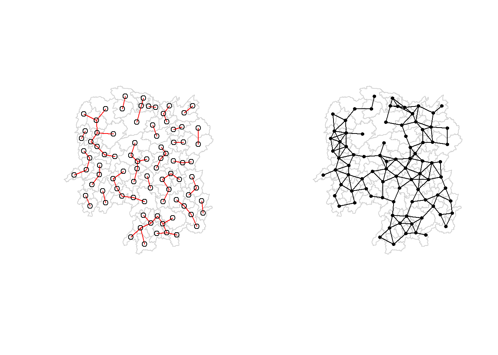

pacman::p_load(sf, tidyverse)In-class Exercise 1
Recap of Hands-On Exercise
0.1 Getting Started
p_load function of pacman package is used to install and load sf and tidyverse packages into R environment.
0.2 Importing Geospatial Data
Importing polygon feature data
st_read() function of sf package imports ESRI shapefile into R as a polygon feature data frame.
sf stands for Simple Features.
Note that dsn defines the data path, and layer is the shapefile name.
Note that no extension such as .shp, .dbf, .prj and .shx are needed.
mpsz <- st_read(dsn = "data/geospatial", layer = "MP14_SUBZONE_WEB_PL")Reading layer `MP14_SUBZONE_WEB_PL' from data source
`C:\zong-you-1\ISSS624\In-class_Ex\In-class_Ex1\data\geospatial'
using driver `ESRI Shapefile'
Simple feature collection with 323 features and 15 fields
Geometry type: MULTIPOLYGON
Dimension: XY
Bounding box: xmin: 2667.538 ymin: 15748.72 xmax: 56396.44 ymax: 50256.33
Projected CRS: SVY21Importing and transforming into projected coordinates system
Using piping %>% to perform two actions at one go.
preschool <- st_read("data/geospatial/pre-schools-location-kml.kml") %>%
st_transform(crs=3414)Reading layer `PRESCHOOLS_LOCATION' from data source
`C:\zong-you-1\ISSS624\In-class_Ex\In-class_Ex1\data\geospatial\pre-schools-location-kml.kml'
using driver `KML'
Simple feature collection with 1359 features and 2 fields
Geometry type: POINT
Dimension: XYZ
Bounding box: xmin: 103.6824 ymin: 1.248403 xmax: 103.9897 ymax: 1.462134
z_range: zmin: 0 zmax: 0
Geodetic CRS: WGS 84st_geometry(preschool)Geometry set for 1359 features
Geometry type: POINT
Dimension: XYZ
Bounding box: xmin: 11203.01 ymin: 25667.6 xmax: 45404.24 ymax: 49300.88
z_range: zmin: 0 zmax: 0
Projected CRS: SVY21 / Singapore TM
First 5 geometries:POINT Z (19997.26 32333.17 0)POINT Z (19126.75 33114.35 0)POINT Z (20345.12 31934.56 0)POINT Z (20400.31 31952.36 0)POINT Z (19810.78 33140.31 0)Start of In-class Exercise - 19 Nov 2022
pacman::p_load(sf, tidyverse, spdep, tmap)1 Getting the data
hunan_sf <- st_read(dsn = "data/geospatial", layer = "Hunan")Reading layer `Hunan' from data source
`C:\zong-you-1\ISSS624\In-class_Ex\In-class_Ex1\data\geospatial'
using driver `ESRI Shapefile'
Simple feature collection with 88 features and 7 fields
Geometry type: POLYGON
Dimension: XY
Bounding box: xmin: 108.7831 ymin: 24.6342 xmax: 114.2544 ymax: 30.12812
Geodetic CRS: WGS 841.1 Importing attribute data in csv
hunan2012 <- read_csv("data/aspatial/Hunan_2012.csv")Rows: 88 Columns: 29
── Column specification ────────────────────────────────────────────────────────
Delimiter: ","
chr (2): County, City
dbl (27): avg_wage, deposite, FAI, Gov_Rev, Gov_Exp, GDP, GDPPC, GIO, Loan, ...
ℹ Use `spec()` to retrieve the full column specification for this data.
ℹ Specify the column types or set `show_col_types = FALSE` to quiet this message.1.2 Perform partial join
hunan <- left_join(hunan_sf,hunan2012)Joining, by = "County"2 Visualising Regional Development Indicator
Using qtm() of tmap package, we can plot a basemap and a choropleth map.
basemap <- tm_shape(hunan) +
tm_polygons() +
tm_text("NAME_3", size=0.5)
gdppc <- qtm(hunan, "GDPPC")
tmap_arrange(basemap, gdppc, asp=1, ncol=2)
3 Computing Contiguity Spatial Weights using poly2nb()
We use poly2nb() of spdep package to compute contiguity weight matrices for the study area. This function builds a neighbours list based on regions with contiguous boundaries.
Note that the default is queen = TRUE.
3.1 Computing (QUEEN) contiguity based neighbours
wm_q <- poly2nb(hunan, queen=TRUE)
summary(wm_q)Neighbour list object:
Number of regions: 88
Number of nonzero links: 448
Percentage nonzero weights: 5.785124
Average number of links: 5.090909
Link number distribution:
1 2 3 4 5 6 7 8 9 11
2 2 12 16 24 14 11 4 2 1
2 least connected regions:
30 65 with 1 link
1 most connected region:
85 with 11 linksThe summary report above shows that there are 88 area units in Hunan. The most connected area unit has 11 neighbours. There are two area units with only one heighbours.
We can find the neighbouring polygons for the first polygon in the object using the following code chunk:
wm_q[[1]][1] 2 3 4 57 85To retrieve county name, use the following code chunk:
hunan$County[1][1] "Anxiang"To reveal the county names of the five neighbouring polygons of Anxiang:
hunan$NAME_3[c(2,3,4,57,85)][1] "Hanshou" "Jinshi" "Li" "Nan" "Taoyuan"# nb1 <- wm_q[[1]]
# hunan$NAME_3[nb1]To retrieve GDPPC of these five countries:
nb1 <- wm_q[[1]]
nb1 <- hunan$GDPPC[nb1]
nb1[1] 20981 34592 24473 21311 22879To display the complete weight matrix:
str(wm_q)List of 88
$ : int [1:5] 2 3 4 57 85
$ : int [1:5] 1 57 58 78 85
$ : int [1:4] 1 4 5 85
$ : int [1:4] 1 3 5 6
$ : int [1:4] 3 4 6 85
$ : int [1:5] 4 5 69 75 85
$ : int [1:4] 67 71 74 84
$ : int [1:7] 9 46 47 56 78 80 86
$ : int [1:6] 8 66 68 78 84 86
$ : int [1:8] 16 17 19 20 22 70 72 73
$ : int [1:3] 14 17 72
$ : int [1:5] 13 60 61 63 83
$ : int [1:4] 12 15 60 83
$ : int [1:3] 11 15 17
$ : int [1:4] 13 14 17 83
$ : int [1:5] 10 17 22 72 83
$ : int [1:7] 10 11 14 15 16 72 83
$ : int [1:5] 20 22 23 77 83
$ : int [1:6] 10 20 21 73 74 86
$ : int [1:7] 10 18 19 21 22 23 82
$ : int [1:5] 19 20 35 82 86
$ : int [1:5] 10 16 18 20 83
$ : int [1:7] 18 20 38 41 77 79 82
$ : int [1:5] 25 28 31 32 54
$ : int [1:5] 24 28 31 33 81
$ : int [1:4] 27 33 42 81
$ : int [1:3] 26 29 42
$ : int [1:5] 24 25 33 49 54
$ : int [1:3] 27 37 42
$ : int 33
$ : int [1:8] 24 25 32 36 39 40 56 81
$ : int [1:8] 24 31 50 54 55 56 75 85
$ : int [1:5] 25 26 28 30 81
$ : int [1:3] 36 45 80
$ : int [1:6] 21 41 47 80 82 86
$ : int [1:6] 31 34 40 45 56 80
$ : int [1:4] 29 42 43 44
$ : int [1:4] 23 44 77 79
$ : int [1:5] 31 40 42 43 81
$ : int [1:6] 31 36 39 43 45 79
$ : int [1:6] 23 35 45 79 80 82
$ : int [1:7] 26 27 29 37 39 43 81
$ : int [1:6] 37 39 40 42 44 79
$ : int [1:4] 37 38 43 79
$ : int [1:6] 34 36 40 41 79 80
$ : int [1:3] 8 47 86
$ : int [1:5] 8 35 46 80 86
$ : int [1:5] 50 51 52 53 55
$ : int [1:4] 28 51 52 54
$ : int [1:5] 32 48 52 54 55
$ : int [1:3] 48 49 52
$ : int [1:5] 48 49 50 51 54
$ : int [1:3] 48 55 75
$ : int [1:6] 24 28 32 49 50 52
$ : int [1:5] 32 48 50 53 75
$ : int [1:7] 8 31 32 36 78 80 85
$ : int [1:6] 1 2 58 64 76 85
$ : int [1:5] 2 57 68 76 78
$ : int [1:4] 60 61 87 88
$ : int [1:4] 12 13 59 61
$ : int [1:7] 12 59 60 62 63 77 87
$ : int [1:3] 61 77 87
$ : int [1:4] 12 61 77 83
$ : int [1:2] 57 76
$ : int 76
$ : int [1:5] 9 67 68 76 84
$ : int [1:4] 7 66 76 84
$ : int [1:5] 9 58 66 76 78
$ : int [1:3] 6 75 85
$ : int [1:3] 10 72 73
$ : int [1:3] 7 73 74
$ : int [1:5] 10 11 16 17 70
$ : int [1:5] 10 19 70 71 74
$ : int [1:6] 7 19 71 73 84 86
$ : int [1:6] 6 32 53 55 69 85
$ : int [1:7] 57 58 64 65 66 67 68
$ : int [1:7] 18 23 38 61 62 63 83
$ : int [1:7] 2 8 9 56 58 68 85
$ : int [1:7] 23 38 40 41 43 44 45
$ : int [1:8] 8 34 35 36 41 45 47 56
$ : int [1:6] 25 26 31 33 39 42
$ : int [1:5] 20 21 23 35 41
$ : int [1:9] 12 13 15 16 17 18 22 63 77
$ : int [1:6] 7 9 66 67 74 86
$ : int [1:11] 1 2 3 5 6 32 56 57 69 75 ...
$ : int [1:9] 8 9 19 21 35 46 47 74 84
$ : int [1:4] 59 61 62 88
$ : int [1:2] 59 87
- attr(*, "class")= chr "nb"
- attr(*, "region.id")= chr [1:88] "1" "2" "3" "4" ...
- attr(*, "call")= language poly2nb(pl = hunan, queen = TRUE)
- attr(*, "type")= chr "queen"
- attr(*, "sym")= logi TRUE3.2 Computing (ROOK) contiguity based neighbours
wm_r <- poly2nb(hunan, queen=FALSE)
summary(wm_r)Neighbour list object:
Number of regions: 88
Number of nonzero links: 440
Percentage nonzero weights: 5.681818
Average number of links: 5
Link number distribution:
1 2 3 4 5 6 7 8 9 10
2 2 12 20 21 14 11 3 2 1
2 least connected regions:
30 65 with 1 link
1 most connected region:
85 with 10 links3.3 Visualising contiguity weights
Compute longitude and latitude, and combine to form the coordinates.
longitude <- map_dbl(hunan$geometry, ~st_centroid(.x)[[1]])
latitude <- map_dbl(hunan$geometry, ~st_centroid(.x)[[2]])coords <- cbind(longitude, latitude)
head(coords) longitude latitude
[1,] 112.1531 29.44362
[2,] 112.0372 28.86489
[3,] 111.8917 29.47107
[4,] 111.7031 29.74499
[5,] 111.6138 29.49258
[6,] 111.0341 29.798633.4 Plot Queen contiguity based neighbours map
plot(hunan$geometry, border="lightgrey")
plot(wm_q, coords, pch = 19, cex = 0.6, add = TRUE, col= "red")
3.5 Plot Rook contiguity based neighbours map
plot(hunan$geometry, border="lightgrey")
plot(wm_r, coords, pch = 19, cex = 0.6, add = TRUE, col = "red")
3.6 Plot both Queen and Rook contiguity based neighbours map
par(mfrow=c(1,2))
plot(hunan$geometry, border="lightgrey")
plot(wm_q, coords, pch = 19, cex = 0.6, add = TRUE, col= "red", main="Queen Contiguity")
plot(hunan$geometry, border="lightgrey")
plot(wm_r, coords, pch = 19, cex = 0.6, add = TRUE, col = "red", main="Rook Contiguity")
4 Computing distance-based neighbours using dnearneigh()
We use dnearneigh() of spdep package to derive distance-based weight matrices.
The function identifies neighbours of region points by Euclidean distance with a distance band with lower d1= and upper d2= bounds controlled by the bounds= argument. If unprojected coordinates are used and either specified in the coordinates object x or with x as a two column matrix and longlat=TRUE, great circle distances in km will be calculated assuming the WGS84 reference ellipsoid.
4.1 Determine cutoff distance
#coords <- coordinates(hunan)
k1 <- knn2nb(knearneigh(coords))
k1dists <- unlist(nbdists(k1, coords, longlat = TRUE))
summary(k1dists) Min. 1st Qu. Median Mean 3rd Qu. Max.
24.79 32.57 38.01 39.07 44.52 61.79 The summary report shows that the largest first nearest neighbour distance is 61.79 km, so using this as the upper threshold gives certainty that all units will have at least one neighbour.
4.2 Compute fixed distance weight matrix
wm_d62 <- dnearneigh(coords, 0, 62, longlat = TRUE)
wm_d62Neighbour list object:
Number of regions: 88
Number of nonzero links: 324
Percentage nonzero weights: 4.183884
Average number of links: 3.681818 To display the content of wm_d62 weight matrix:
str(wm_d62)List of 88
$ : int [1:5] 3 4 5 57 64
$ : int [1:4] 57 58 78 85
$ : int [1:4] 1 4 5 57
$ : int [1:3] 1 3 5
$ : int [1:4] 1 3 4 85
$ : int 69
$ : int [1:2] 67 84
$ : int [1:4] 9 46 47 78
$ : int [1:4] 8 46 68 84
$ : int [1:4] 16 22 70 72
$ : int [1:3] 14 17 72
$ : int [1:5] 13 60 61 63 83
$ : int [1:4] 12 15 60 83
$ : int [1:2] 11 17
$ : int 13
$ : int [1:4] 10 17 22 83
$ : int [1:3] 11 14 16
$ : int [1:3] 20 22 63
$ : int [1:5] 20 21 73 74 82
$ : int [1:5] 18 19 21 22 82
$ : int [1:6] 19 20 35 74 82 86
$ : int [1:4] 10 16 18 20
$ : int [1:3] 41 77 82
$ : int [1:4] 25 28 31 54
$ : int [1:4] 24 28 33 81
$ : int [1:4] 27 33 42 81
$ : int [1:2] 26 29
$ : int [1:6] 24 25 33 49 52 54
$ : int [1:2] 27 37
$ : int 33
$ : int [1:2] 24 36
$ : int 50
$ : int [1:5] 25 26 28 30 81
$ : int [1:3] 36 45 80
$ : int [1:6] 21 41 46 47 80 82
$ : int [1:5] 31 34 45 56 80
$ : int [1:2] 29 42
$ : int [1:3] 44 77 79
$ : int [1:4] 40 42 43 81
$ : int [1:3] 39 45 79
$ : int [1:5] 23 35 45 79 82
$ : int [1:5] 26 37 39 43 81
$ : int [1:3] 39 42 44
$ : int [1:2] 38 43
$ : int [1:6] 34 36 40 41 79 80
$ : int [1:5] 8 9 35 47 86
$ : int [1:5] 8 35 46 80 86
$ : int [1:5] 50 51 52 53 55
$ : int [1:4] 28 51 52 54
$ : int [1:6] 32 48 51 52 54 55
$ : int [1:4] 48 49 50 52
$ : int [1:6] 28 48 49 50 51 54
$ : int [1:2] 48 55
$ : int [1:5] 24 28 49 50 52
$ : int [1:4] 48 50 53 75
$ : int 36
$ : int [1:5] 1 2 3 58 64
$ : int [1:5] 2 57 64 66 68
$ : int [1:3] 60 87 88
$ : int [1:4] 12 13 59 61
$ : int [1:5] 12 60 62 63 87
$ : int [1:4] 61 63 77 87
$ : int [1:5] 12 18 61 62 83
$ : int [1:4] 1 57 58 76
$ : int 76
$ : int [1:5] 58 67 68 76 84
$ : int [1:2] 7 66
$ : int [1:4] 9 58 66 84
$ : int [1:2] 6 75
$ : int [1:3] 10 72 73
$ : int [1:2] 73 74
$ : int [1:3] 10 11 70
$ : int [1:4] 19 70 71 74
$ : int [1:5] 19 21 71 73 86
$ : int [1:2] 55 69
$ : int [1:3] 64 65 66
$ : int [1:3] 23 38 62
$ : int [1:2] 2 8
$ : int [1:4] 38 40 41 45
$ : int [1:5] 34 35 36 45 47
$ : int [1:5] 25 26 33 39 42
$ : int [1:6] 19 20 21 23 35 41
$ : int [1:4] 12 13 16 63
$ : int [1:4] 7 9 66 68
$ : int [1:2] 2 5
$ : int [1:4] 21 46 47 74
$ : int [1:4] 59 61 62 88
$ : int [1:2] 59 87
- attr(*, "class")= chr "nb"
- attr(*, "region.id")= chr [1:88] "1" "2" "3" "4" ...
- attr(*, "call")= language dnearneigh(x = coords, d1 = 0, d2 = 62, longlat = TRUE)
- attr(*, "dnn")= num [1:2] 0 62
- attr(*, "bounds")= chr [1:2] "GE" "LE"
- attr(*, "nbtype")= chr "distance"
- attr(*, "sym")= logi TRUEAnother way to display weight matrix:
table(hunan$County, card(wm_d62))
1 2 3 4 5 6
Anhua 1 0 0 0 0 0
Anren 0 0 0 1 0 0
Anxiang 0 0 0 0 1 0
Baojing 0 0 0 0 1 0
Chaling 0 0 1 0 0 0
Changning 0 0 1 0 0 0
Changsha 0 0 0 1 0 0
Chengbu 0 1 0 0 0 0
Chenxi 0 0 0 1 0 0
Cili 0 1 0 0 0 0
Dao 0 0 0 1 0 0
Dongan 0 0 1 0 0 0
Dongkou 0 0 0 1 0 0
Fenghuang 0 0 0 1 0 0
Guidong 0 0 1 0 0 0
Guiyang 0 0 0 1 0 0
Guzhang 0 0 0 0 0 1
Hanshou 0 0 0 1 0 0
Hengdong 0 0 0 0 1 0
Hengnan 0 0 0 0 1 0
Hengshan 0 0 0 0 0 1
Hengyang 0 0 0 0 0 1
Hongjiang 0 0 0 0 1 0
Huarong 0 0 0 1 0 0
Huayuan 0 0 0 1 0 0
Huitong 0 0 0 1 0 0
Jiahe 0 0 0 0 1 0
Jianghua 0 0 1 0 0 0
Jiangyong 0 1 0 0 0 0
Jingzhou 0 1 0 0 0 0
Jinshi 0 0 0 1 0 0
Jishou 0 0 0 0 0 1
Lanshan 0 0 0 1 0 0
Leiyang 0 0 0 1 0 0
Lengshuijiang 0 0 1 0 0 0
Li 0 0 1 0 0 0
Lianyuan 0 0 0 0 1 0
Liling 0 1 0 0 0 0
Linli 0 0 0 1 0 0
Linwu 0 0 0 1 0 0
Linxiang 1 0 0 0 0 0
Liuyang 0 1 0 0 0 0
Longhui 0 0 1 0 0 0
Longshan 0 1 0 0 0 0
Luxi 0 0 0 0 1 0
Mayang 0 0 0 0 0 1
Miluo 0 0 0 0 1 0
Nan 0 0 0 0 1 0
Ningxiang 0 0 0 1 0 0
Ningyuan 0 0 0 0 1 0
Pingjiang 0 1 0 0 0 0
Qidong 0 0 1 0 0 0
Qiyang 0 0 1 0 0 0
Rucheng 0 1 0 0 0 0
Sangzhi 0 1 0 0 0 0
Shaodong 0 0 0 0 1 0
Shaoshan 0 0 0 0 1 0
Shaoyang 0 0 0 1 0 0
Shimen 1 0 0 0 0 0
Shuangfeng 0 0 0 0 0 1
Shuangpai 0 0 0 1 0 0
Suining 0 0 0 0 1 0
Taojiang 0 1 0 0 0 0
Taoyuan 0 1 0 0 0 0
Tongdao 0 1 0 0 0 0
Wangcheng 0 0 0 1 0 0
Wugang 0 0 1 0 0 0
Xiangtan 0 0 0 1 0 0
Xiangxiang 0 0 0 0 1 0
Xiangyin 0 0 0 1 0 0
Xinhua 0 0 0 0 1 0
Xinhuang 1 0 0 0 0 0
Xinning 0 1 0 0 0 0
Xinshao 0 0 0 0 0 1
Xintian 0 0 0 0 1 0
Xupu 0 1 0 0 0 0
Yanling 0 0 1 0 0 0
Yizhang 1 0 0 0 0 0
Yongshun 0 0 0 1 0 0
Yongxing 0 0 0 1 0 0
You 0 0 0 1 0 0
Yuanjiang 0 0 0 0 1 0
Yuanling 1 0 0 0 0 0
Yueyang 0 0 1 0 0 0
Zhijiang 0 0 0 0 1 0
Zhongfang 0 0 0 1 0 0
Zhuzhou 0 0 0 0 1 0
Zixing 0 0 1 0 0 0n_comp <- n.comp.nb(wm_d62)
n_comp$nc[1] 1table(n_comp$comp.id)
1
88 4.3 Plot fixed distance weight matrix
plot(hunan$geometry, border="lightgrey")
plot(wm_d62, coords, add=TRUE)
plot(k1, coords, add=TRUE, col="red", length=0.08)
The red lines show the links of 1st nearest neighbours and the black lines show the links of neighbours within the cut-off distance of 62km.
par(mfrow=c(1,2))
plot(hunan$geometry, border="lightgrey")
plot(k1, coords, add=TRUE, col="red", length=0.08, main="1st nearest neighbours")
plot(hunan$geometry, border="lightgrey")
plot(wm_d62, coords, add=TRUE, pch = 19, cex = 0.6, main="Distance link")
4.4 Compute adaptive distance weight matrix
knn6 <- knn2nb(knearneigh(coords, k=6))
knn6Neighbour list object:
Number of regions: 88
Number of nonzero links: 528
Percentage nonzero weights: 6.818182
Average number of links: 6
Non-symmetric neighbours listTo display content of the matrix:
str(knn6)List of 88
$ : int [1:6] 2 3 4 5 57 64
$ : int [1:6] 1 3 57 58 78 85
$ : int [1:6] 1 2 4 5 57 85
$ : int [1:6] 1 3 5 6 69 85
$ : int [1:6] 1 3 4 6 69 85
$ : int [1:6] 3 4 5 69 75 85
$ : int [1:6] 9 66 67 71 74 84
$ : int [1:6] 9 46 47 78 80 86
$ : int [1:6] 8 46 66 68 84 86
$ : int [1:6] 16 19 22 70 72 73
$ : int [1:6] 10 14 16 17 70 72
$ : int [1:6] 13 15 60 61 63 83
$ : int [1:6] 12 15 60 61 63 83
$ : int [1:6] 11 15 16 17 72 83
$ : int [1:6] 12 13 14 17 60 83
$ : int [1:6] 10 11 17 22 72 83
$ : int [1:6] 10 11 14 16 72 83
$ : int [1:6] 20 22 23 63 77 83
$ : int [1:6] 10 20 21 73 74 82
$ : int [1:6] 18 19 21 22 23 82
$ : int [1:6] 19 20 35 74 82 86
$ : int [1:6] 10 16 18 19 20 83
$ : int [1:6] 18 20 41 77 79 82
$ : int [1:6] 25 28 31 52 54 81
$ : int [1:6] 24 28 31 33 54 81
$ : int [1:6] 25 27 29 33 42 81
$ : int [1:6] 26 29 30 37 42 81
$ : int [1:6] 24 25 33 49 52 54
$ : int [1:6] 26 27 37 42 43 81
$ : int [1:6] 26 27 28 33 49 81
$ : int [1:6] 24 25 36 39 40 54
$ : int [1:6] 24 31 50 54 55 56
$ : int [1:6] 25 26 28 30 49 81
$ : int [1:6] 36 40 41 45 56 80
$ : int [1:6] 21 41 46 47 80 82
$ : int [1:6] 31 34 40 45 56 80
$ : int [1:6] 26 27 29 42 43 44
$ : int [1:6] 23 43 44 62 77 79
$ : int [1:6] 25 40 42 43 44 81
$ : int [1:6] 31 36 39 43 45 79
$ : int [1:6] 23 35 45 79 80 82
$ : int [1:6] 26 27 37 39 43 81
$ : int [1:6] 37 39 40 42 44 79
$ : int [1:6] 37 38 39 42 43 79
$ : int [1:6] 34 36 40 41 79 80
$ : int [1:6] 8 9 35 47 78 86
$ : int [1:6] 8 21 35 46 80 86
$ : int [1:6] 49 50 51 52 53 55
$ : int [1:6] 28 33 48 51 52 54
$ : int [1:6] 32 48 51 52 54 55
$ : int [1:6] 28 48 49 50 52 54
$ : int [1:6] 28 48 49 50 51 54
$ : int [1:6] 48 50 51 52 55 75
$ : int [1:6] 24 28 49 50 51 52
$ : int [1:6] 32 48 50 52 53 75
$ : int [1:6] 32 34 36 78 80 85
$ : int [1:6] 1 2 3 58 64 68
$ : int [1:6] 2 57 64 66 68 78
$ : int [1:6] 12 13 60 61 87 88
$ : int [1:6] 12 13 59 61 63 87
$ : int [1:6] 12 13 60 62 63 87
$ : int [1:6] 12 38 61 63 77 87
$ : int [1:6] 12 18 60 61 62 83
$ : int [1:6] 1 3 57 58 68 76
$ : int [1:6] 58 64 66 67 68 76
$ : int [1:6] 9 58 67 68 76 84
$ : int [1:6] 7 65 66 68 76 84
$ : int [1:6] 9 57 58 66 78 84
$ : int [1:6] 4 5 6 32 75 85
$ : int [1:6] 10 16 19 22 72 73
$ : int [1:6] 7 19 73 74 84 86
$ : int [1:6] 10 11 14 16 17 70
$ : int [1:6] 10 19 21 70 71 74
$ : int [1:6] 19 21 71 73 84 86
$ : int [1:6] 6 32 50 53 55 69
$ : int [1:6] 58 64 65 66 67 68
$ : int [1:6] 18 23 38 61 62 63
$ : int [1:6] 2 8 9 46 58 68
$ : int [1:6] 38 40 41 43 44 45
$ : int [1:6] 34 35 36 41 45 47
$ : int [1:6] 25 26 28 33 39 42
$ : int [1:6] 19 20 21 23 35 41
$ : int [1:6] 12 13 15 16 22 63
$ : int [1:6] 7 9 66 68 71 74
$ : int [1:6] 2 3 4 5 56 69
$ : int [1:6] 8 9 21 46 47 74
$ : int [1:6] 59 60 61 62 63 88
$ : int [1:6] 59 60 61 62 63 87
- attr(*, "region.id")= chr [1:88] "1" "2" "3" "4" ...
- attr(*, "call")= language knearneigh(x = coords, k = 6)
- attr(*, "sym")= logi FALSE
- attr(*, "type")= chr "knn"
- attr(*, "knn-k")= num 6
- attr(*, "class")= chr "nb"4.5 Plot distance-based neighbours
plot(hunan$geometry, border="lightgrey")
plot(knn6, coords, pch = 19, cex = 0.6, add = TRUE, col = "red")
4.6 Weights based on IDW - derive spatial weight matrix based on Inverse Distance method
We will compute distances between areas using nbdists() of spdep.
dist <- nbdists(wm_q, coords, longlat = TRUE)
ids <- lapply(dist, function(x) 1/(x))
ids[[1]]
[1] 0.01535405 0.03916350 0.01820896 0.02807922 0.01145113
[[2]]
[1] 0.01535405 0.01764308 0.01925924 0.02323898 0.01719350
[[3]]
[1] 0.03916350 0.02822040 0.03695795 0.01395765
[[4]]
[1] 0.01820896 0.02822040 0.03414741 0.01539065
[[5]]
[1] 0.03695795 0.03414741 0.01524598 0.01618354
[[6]]
[1] 0.015390649 0.015245977 0.021748129 0.011883901 0.009810297
[[7]]
[1] 0.01708612 0.01473997 0.01150924 0.01872915
[[8]]
[1] 0.02022144 0.03453056 0.02529256 0.01036340 0.02284457 0.01500600 0.01515314
[[9]]
[1] 0.02022144 0.01574888 0.02109502 0.01508028 0.02902705 0.01502980
[[10]]
[1] 0.02281552 0.01387777 0.01538326 0.01346650 0.02100510 0.02631658 0.01874863
[8] 0.01500046
[[11]]
[1] 0.01882869 0.02243492 0.02247473
[[12]]
[1] 0.02779227 0.02419652 0.02333385 0.02986130 0.02335429
[[13]]
[1] 0.02779227 0.02650020 0.02670323 0.01714243
[[14]]
[1] 0.01882869 0.01233868 0.02098555
[[15]]
[1] 0.02650020 0.01233868 0.01096284 0.01562226
[[16]]
[1] 0.02281552 0.02466962 0.02765018 0.01476814 0.01671430
[[17]]
[1] 0.01387777 0.02243492 0.02098555 0.01096284 0.02466962 0.01593341 0.01437996
[[18]]
[1] 0.02039779 0.02032767 0.01481665 0.01473691 0.01459380
[[19]]
[1] 0.01538326 0.01926323 0.02668415 0.02140253 0.01613589 0.01412874
[[20]]
[1] 0.01346650 0.02039779 0.01926323 0.01723025 0.02153130 0.01469240 0.02327034
[[21]]
[1] 0.02668415 0.01723025 0.01766299 0.02644986 0.02163800
[[22]]
[1] 0.02100510 0.02765018 0.02032767 0.02153130 0.01489296
[[23]]
[1] 0.01481665 0.01469240 0.01401432 0.02246233 0.01880425 0.01530458 0.01849605
[[24]]
[1] 0.02354598 0.01837201 0.02607264 0.01220154 0.02514180
[[25]]
[1] 0.02354598 0.02188032 0.01577283 0.01949232 0.02947957
[[26]]
[1] 0.02155798 0.01745522 0.02212108 0.02220532
[[27]]
[1] 0.02155798 0.02490625 0.01562326
[[28]]
[1] 0.01837201 0.02188032 0.02229549 0.03076171 0.02039506
[[29]]
[1] 0.02490625 0.01686587 0.01395022
[[30]]
[1] 0.02090587
[[31]]
[1] 0.02607264 0.01577283 0.01219005 0.01724850 0.01229012 0.01609781 0.01139438
[8] 0.01150130
[[32]]
[1] 0.01220154 0.01219005 0.01712515 0.01340413 0.01280928 0.01198216 0.01053374
[8] 0.01065655
[[33]]
[1] 0.01949232 0.01745522 0.02229549 0.02090587 0.01979045
[[34]]
[1] 0.03113041 0.03589551 0.02882915
[[35]]
[1] 0.01766299 0.02185795 0.02616766 0.02111721 0.02108253 0.01509020
[[36]]
[1] 0.01724850 0.03113041 0.01571707 0.01860991 0.02073549 0.01680129
[[37]]
[1] 0.01686587 0.02234793 0.01510990 0.01550676
[[38]]
[1] 0.01401432 0.02407426 0.02276151 0.01719415
[[39]]
[1] 0.01229012 0.02172543 0.01711924 0.02629732 0.01896385
[[40]]
[1] 0.01609781 0.01571707 0.02172543 0.01506473 0.01987922 0.01894207
[[41]]
[1] 0.02246233 0.02185795 0.02205991 0.01912542 0.01601083 0.01742892
[[42]]
[1] 0.02212108 0.01562326 0.01395022 0.02234793 0.01711924 0.01836831 0.01683518
[[43]]
[1] 0.01510990 0.02629732 0.01506473 0.01836831 0.03112027 0.01530782
[[44]]
[1] 0.01550676 0.02407426 0.03112027 0.01486508
[[45]]
[1] 0.03589551 0.01860991 0.01987922 0.02205991 0.02107101 0.01982700
[[46]]
[1] 0.03453056 0.04033752 0.02689769
[[47]]
[1] 0.02529256 0.02616766 0.04033752 0.01949145 0.02181458
[[48]]
[1] 0.02313819 0.03370576 0.02289485 0.01630057 0.01818085
[[49]]
[1] 0.03076171 0.02138091 0.02394529 0.01990000
[[50]]
[1] 0.01712515 0.02313819 0.02551427 0.02051530 0.02187179
[[51]]
[1] 0.03370576 0.02138091 0.02873854
[[52]]
[1] 0.02289485 0.02394529 0.02551427 0.02873854 0.03516672
[[53]]
[1] 0.01630057 0.01979945 0.01253977
[[54]]
[1] 0.02514180 0.02039506 0.01340413 0.01990000 0.02051530 0.03516672
[[55]]
[1] 0.01280928 0.01818085 0.02187179 0.01979945 0.01882298
[[56]]
[1] 0.01036340 0.01139438 0.01198216 0.02073549 0.01214479 0.01362855 0.01341697
[[57]]
[1] 0.028079221 0.017643082 0.031423501 0.029114131 0.013520292 0.009903702
[[58]]
[1] 0.01925924 0.03142350 0.02722997 0.01434859 0.01567192
[[59]]
[1] 0.01696711 0.01265572 0.01667105 0.01785036
[[60]]
[1] 0.02419652 0.02670323 0.01696711 0.02343040
[[61]]
[1] 0.02333385 0.01265572 0.02343040 0.02514093 0.02790764 0.01219751 0.02362452
[[62]]
[1] 0.02514093 0.02002219 0.02110260
[[63]]
[1] 0.02986130 0.02790764 0.01407043 0.01805987
[[64]]
[1] 0.02911413 0.01689892
[[65]]
[1] 0.02471705
[[66]]
[1] 0.01574888 0.01726461 0.03068853 0.01954805 0.01810569
[[67]]
[1] 0.01708612 0.01726461 0.01349843 0.01361172
[[68]]
[1] 0.02109502 0.02722997 0.03068853 0.01406357 0.01546511
[[69]]
[1] 0.02174813 0.01645838 0.01419926
[[70]]
[1] 0.02631658 0.01963168 0.02278487
[[71]]
[1] 0.01473997 0.01838483 0.03197403
[[72]]
[1] 0.01874863 0.02247473 0.01476814 0.01593341 0.01963168
[[73]]
[1] 0.01500046 0.02140253 0.02278487 0.01838483 0.01652709
[[74]]
[1] 0.01150924 0.01613589 0.03197403 0.01652709 0.01342099 0.02864567
[[75]]
[1] 0.011883901 0.010533736 0.012539774 0.018822977 0.016458383 0.008217581
[[76]]
[1] 0.01352029 0.01434859 0.01689892 0.02471705 0.01954805 0.01349843 0.01406357
[[77]]
[1] 0.014736909 0.018804247 0.022761507 0.012197506 0.020022195 0.014070428
[7] 0.008440896
[[78]]
[1] 0.02323898 0.02284457 0.01508028 0.01214479 0.01567192 0.01546511 0.01140779
[[79]]
[1] 0.01530458 0.01719415 0.01894207 0.01912542 0.01530782 0.01486508 0.02107101
[[80]]
[1] 0.01500600 0.02882915 0.02111721 0.01680129 0.01601083 0.01982700 0.01949145
[8] 0.01362855
[[81]]
[1] 0.02947957 0.02220532 0.01150130 0.01979045 0.01896385 0.01683518
[[82]]
[1] 0.02327034 0.02644986 0.01849605 0.02108253 0.01742892
[[83]]
[1] 0.023354289 0.017142433 0.015622258 0.016714303 0.014379961 0.014593799
[7] 0.014892965 0.018059871 0.008440896
[[84]]
[1] 0.01872915 0.02902705 0.01810569 0.01361172 0.01342099 0.01297994
[[85]]
[1] 0.011451133 0.017193502 0.013957649 0.016183544 0.009810297 0.010656545
[7] 0.013416965 0.009903702 0.014199260 0.008217581 0.011407794
[[86]]
[1] 0.01515314 0.01502980 0.01412874 0.02163800 0.01509020 0.02689769 0.02181458
[8] 0.02864567 0.01297994
[[87]]
[1] 0.01667105 0.02362452 0.02110260 0.02058034
[[88]]
[1] 0.01785036 0.020580344.7 Row-standardised weights matrix
rswm_q <- nb2listw(wm_q, style="W", zero.policy = TRUE)
rswm_qCharacteristics of weights list object:
Neighbour list object:
Number of regions: 88
Number of nonzero links: 448
Percentage nonzero weights: 5.785124
Average number of links: 5.090909
Weights style: W
Weights constants summary:
n nn S0 S1 S2
W 88 7744 88 37.86334 365.9147To see the weight of the first polygon’s four neighbors type:
rswm_q$weights[10][[1]]
[1] 0.125 0.125 0.125 0.125 0.125 0.125 0.125 0.1254.8 Row-standardised distance weight matrix
rswm_ids <- nb2listw(wm_q, glist=ids, style="B", zero.policy=TRUE)
rswm_idsCharacteristics of weights list object:
Neighbour list object:
Number of regions: 88
Number of nonzero links: 448
Percentage nonzero weights: 5.785124
Average number of links: 5.090909
Weights style: B
Weights constants summary:
n nn S0 S1 S2
B 88 7744 8.786867 0.3776535 3.8137rswm_ids$weights[1][[1]]
[1] 0.01535405 0.03916350 0.01820896 0.02807922 0.01145113summary(unlist(rswm_ids$weights)) Min. 1st Qu. Median Mean 3rd Qu. Max.
0.008218 0.015088 0.018739 0.019614 0.022823 0.040338 5 Application of Spatial Weight Matrix
5.1 Spatial lag with row-standarized weights
Compute average neighbour GDPPC value for each polygon. These values are often referred as spatially lagged values.
GDPPC.lag <- lag.listw(rswm_q, hunan$GDPPC)
GDPPC.lag [1] 24847.20 22724.80 24143.25 27737.50 27270.25 21248.80 43747.00 33582.71
[9] 45651.17 32027.62 32671.00 20810.00 25711.50 30672.33 33457.75 31689.20
[17] 20269.00 23901.60 25126.17 21903.43 22718.60 25918.80 20307.00 20023.80
[25] 16576.80 18667.00 14394.67 19848.80 15516.33 20518.00 17572.00 15200.12
[33] 18413.80 14419.33 24094.50 22019.83 12923.50 14756.00 13869.80 12296.67
[41] 15775.17 14382.86 11566.33 13199.50 23412.00 39541.00 36186.60 16559.60
[49] 20772.50 19471.20 19827.33 15466.80 12925.67 18577.17 14943.00 24913.00
[57] 25093.00 24428.80 17003.00 21143.75 20435.00 17131.33 24569.75 23835.50
[65] 26360.00 47383.40 55157.75 37058.00 21546.67 23348.67 42323.67 28938.60
[73] 25880.80 47345.67 18711.33 29087.29 20748.29 35933.71 15439.71 29787.50
[81] 18145.00 21617.00 29203.89 41363.67 22259.09 44939.56 16902.00 16930.00To retrieve the GDPPC of the 5 counties near Anxiang county (same as previous section):
nb1 <- wm_q[[1]]
nb1 <- hunan$GDPPC[nb1]
nb1[1] 20981 34592 24473 21311 22879Append spatially lag GDPPC values onto Hunan sf data frame:
lag.list <- list(hunan$NAME_3, lag.listw(rswm_q, hunan$GDPPC))
lag.res <- as.data.frame(lag.list)
colnames(lag.res) <- c("NAME_3", "lag GDPPC")
hunan <- left_join(hunan,lag.res)Joining, by = "NAME_3"The following table shows the average neighboring income values (stored in the Inc.lag object) for each county.
head(hunan)Simple feature collection with 6 features and 36 fields
Geometry type: POLYGON
Dimension: XY
Bounding box: xmin: 110.4922 ymin: 28.61762 xmax: 112.3013 ymax: 30.12812
Geodetic CRS: WGS 84
NAME_2 ID_3 NAME_3 ENGTYPE_3 Shape_Leng Shape_Area County City
1 Changde 21098 Anxiang County 1.869074 0.10056190 Anxiang Changde
2 Changde 21100 Hanshou County 2.360691 0.19978745 Hanshou Changde
3 Changde 21101 Jinshi County City 1.425620 0.05302413 Jinshi Changde
4 Changde 21102 Li County 3.474325 0.18908121 Li Changde
5 Changde 21103 Linli County 2.289506 0.11450357 Linli Changde
6 Changde 21104 Shimen County 4.171918 0.37194707 Shimen Changde
avg_wage deposite FAI Gov_Rev Gov_Exp GDP GDPPC GIO Loan NIPCR
1 31935 5517.2 3541.0 243.64 1779.5 12482.0 23667 5108.9 2806.9 7693.7
2 32265 7979.0 8665.0 386.13 2062.4 15788.0 20981 13491.0 4550.0 8269.9
3 28692 4581.7 4777.0 373.31 1148.4 8706.9 34592 10935.0 2242.0 8169.9
4 32541 13487.0 16066.0 709.61 2459.5 20322.0 24473 18402.0 6748.0 8377.0
5 32667 564.1 7781.2 336.86 1538.7 10355.0 25554 8214.0 358.0 8143.1
6 33261 8334.4 10531.0 548.33 2178.8 16293.0 27137 17795.0 6026.5 6156.0
Bed Emp EmpR EmpRT Pri_Stu Sec_Stu Household Household_R NOIP Pop_R
1 1931 336.39 270.5 205.9 19.584 17.819 148.1 135.4 53 346.0
2 2560 456.78 388.8 246.7 42.097 33.029 240.2 208.7 95 553.2
3 848 122.78 82.1 61.7 8.723 7.592 81.9 43.7 77 92.4
4 2038 513.44 426.8 227.1 38.975 33.938 268.5 256.0 96 539.7
5 1440 307.36 272.2 100.8 23.286 18.943 129.1 157.2 99 246.6
6 2502 392.05 329.6 193.8 29.245 26.104 190.6 184.7 122 399.2
RSCG Pop_T Agri Service Disp_Inc RORP ROREmp lag GDPPC
1 3957.9 528.3 4524.41 14100 16610 0.6549309 0.8041262 24847.20
2 4460.5 804.6 6545.35 17727 18925 0.6875466 0.8511756 22724.80
3 3683.0 251.8 2562.46 7525 19498 0.3669579 0.6686757 24143.25
4 7110.2 832.5 7562.34 53160 18985 0.6482883 0.8312558 27737.50
5 3604.9 409.3 3583.91 7031 18604 0.6024921 0.8856065 27270.25
6 6490.7 600.5 5266.51 6981 19275 0.6647794 0.8407091 21248.80
geometry
1 POLYGON ((112.0625 29.75523...
2 POLYGON ((112.2288 29.11684...
3 POLYGON ((111.8927 29.6013,...
4 POLYGON ((111.3731 29.94649...
5 POLYGON ((111.6324 29.76288...
6 POLYGON ((110.8825 30.11675...Plot both GDPPC and spatial lag GDPPC for comparison:
gdppc <- qtm(hunan, "GDPPC")
lag_gdppc <- qtm(hunan, "lag GDPPC")
tmap_arrange(gdppc, lag_gdppc, asp=1, ncol=2)
5.2 Spatial lag as a sum of neighbouring values
We can calculate spatial lag as a sum of neighboring values by assigning binary weights. This requires us to go back to our neighbors list, then apply a function that will assign binary weights, then we use glist = in the nb2listw function to explicitly assign these weights.
We start by applying a function that will assign a value of 1 per each neighbor. This is done with lapply, which we have been using to manipulate the neighbors structure throughout the past notebooks. Basically it applies a function across each value in the neighbors structure.
b_weights <- lapply(wm_q, function(x) 0*x + 1)
b_weights2 <- nb2listw(wm_q,
glist = b_weights,
style = "B")
b_weights2Characteristics of weights list object:
Neighbour list object:
Number of regions: 88
Number of nonzero links: 448
Percentage nonzero weights: 5.785124
Average number of links: 5.090909
Weights style: B
Weights constants summary:
n nn S0 S1 S2
B 88 7744 448 896 10224Compute a lag variable from our weight and GDPPC:
lag_sum <- list(hunan$NAME_3, lag.listw(b_weights2, hunan$GDPPC))
lag.res <- as.data.frame(lag_sum)
colnames(lag.res) <- c("NAME_3", "lag_sum GDPPC")lag_sum[[1]]
[1] "Anxiang" "Hanshou" "Jinshi" "Li"
[5] "Linli" "Shimen" "Liuyang" "Ningxiang"
[9] "Wangcheng" "Anren" "Guidong" "Jiahe"
[13] "Linwu" "Rucheng" "Yizhang" "Yongxing"
[17] "Zixing" "Changning" "Hengdong" "Hengnan"
[21] "Hengshan" "Leiyang" "Qidong" "Chenxi"
[25] "Zhongfang" "Huitong" "Jingzhou" "Mayang"
[29] "Tongdao" "Xinhuang" "Xupu" "Yuanling"
[33] "Zhijiang" "Lengshuijiang" "Shuangfeng" "Xinhua"
[37] "Chengbu" "Dongan" "Dongkou" "Longhui"
[41] "Shaodong" "Suining" "Wugang" "Xinning"
[45] "Xinshao" "Shaoshan" "Xiangxiang" "Baojing"
[49] "Fenghuang" "Guzhang" "Huayuan" "Jishou"
[53] "Longshan" "Luxi" "Yongshun" "Anhua"
[57] "Nan" "Yuanjiang" "Jianghua" "Lanshan"
[61] "Ningyuan" "Shuangpai" "Xintian" "Huarong"
[65] "Linxiang" "Miluo" "Pingjiang" "Xiangyin"
[69] "Cili" "Chaling" "Liling" "Yanling"
[73] "You" "Zhuzhou" "Sangzhi" "Yueyang"
[77] "Qiyang" "Taojiang" "Shaoyang" "Lianyuan"
[81] "Hongjiang" "Hengyang" "Guiyang" "Changsha"
[85] "Taoyuan" "Xiangtan" "Dao" "Jiangyong"
[[2]]
[1] 124236 113624 96573 110950 109081 106244 174988 235079 273907 256221
[11] 98013 104050 102846 92017 133831 158446 141883 119508 150757 153324
[21] 113593 129594 142149 100119 82884 74668 43184 99244 46549 20518
[31] 140576 121601 92069 43258 144567 132119 51694 59024 69349 73780
[41] 94651 100680 69398 52798 140472 118623 180933 82798 83090 97356
[51] 59482 77334 38777 111463 74715 174391 150558 122144 68012 84575
[61] 143045 51394 98279 47671 26360 236917 220631 185290 64640 70046
[71] 126971 144693 129404 284074 112268 203611 145238 251536 108078 238300
[81] 108870 108085 262835 248182 244850 404456 67608 33860hunan <- left_join(hunan, lag.res)Joining, by = "NAME_3"gdppc <- qtm(hunan, "GDPPC")
lag_sum_gdppc <- qtm(hunan, "lag_sum GDPPC")
tmap_arrange(gdppc, lag_sum_gdppc, asp=1, ncol=2)
5.3 Spatial window average
The spatial window average uses row-standardized weights and includes the diagonal element.
To add the diagonal element to the neighbour list, we just need to use include.self() from spdep.
wm_q1 <- wm_q
include.self(wm_q1)Neighbour list object:
Number of regions: 88
Number of nonzero links: 536
Percentage nonzero weights: 6.921488
Average number of links: 6.090909 Then we obtain weights with nb2listw():
wm_q1 <- nb2listw(wm_q1)
wm_q1Characteristics of weights list object:
Neighbour list object:
Number of regions: 88
Number of nonzero links: 448
Percentage nonzero weights: 5.785124
Average number of links: 5.090909
Weights style: W
Weights constants summary:
n nn S0 S1 S2
W 88 7744 88 37.86334 365.9147Lastly, create the lag variable from our weight structure and GDPPC variable:
lag_w_avg_gpdpc <- lag.listw(wm_q1,
hunan$GDPPC)
lag_w_avg_gpdpc [1] 24847.20 22724.80 24143.25 27737.50 27270.25 21248.80 43747.00 33582.71
[9] 45651.17 32027.62 32671.00 20810.00 25711.50 30672.33 33457.75 31689.20
[17] 20269.00 23901.60 25126.17 21903.43 22718.60 25918.80 20307.00 20023.80
[25] 16576.80 18667.00 14394.67 19848.80 15516.33 20518.00 17572.00 15200.12
[33] 18413.80 14419.33 24094.50 22019.83 12923.50 14756.00 13869.80 12296.67
[41] 15775.17 14382.86 11566.33 13199.50 23412.00 39541.00 36186.60 16559.60
[49] 20772.50 19471.20 19827.33 15466.80 12925.67 18577.17 14943.00 24913.00
[57] 25093.00 24428.80 17003.00 21143.75 20435.00 17131.33 24569.75 23835.50
[65] 26360.00 47383.40 55157.75 37058.00 21546.67 23348.67 42323.67 28938.60
[73] 25880.80 47345.67 18711.33 29087.29 20748.29 35933.71 15439.71 29787.50
[81] 18145.00 21617.00 29203.89 41363.67 22259.09 44939.56 16902.00 16930.00Convert lag variable listw object into a data.frame by using as.data.frame():
lag.list.wm_q1 <- list(hunan$NAME_3, lag.listw(wm_q1, hunan$GDPPC))
lag_wm_q1.res <- as.data.frame(lag.list.wm_q1)
colnames(lag_wm_q1.res) <- c("NAME_3", "lag_window_avg GDPPC")hunan <- left_join(hunan, lag_wm_q1.res)Joining, by = "NAME_3"gdppc <- qtm(hunan, "GDPPC")
w_avg_gdppc <- qtm(hunan, "lag_window_avg GDPPC")
tmap_arrange(gdppc, w_avg_gdppc, asp=1, ncol=2)
5.4 Spatial window sum
The spatial window sum is the counter part of the window average, but without using row-standardized weights. To do this we assign binary weights to the neighbor structure that includes the diagonal element.
wm_q1 <- wm_q
include.self(wm_q1)Neighbour list object:
Number of regions: 88
Number of nonzero links: 536
Percentage nonzero weights: 6.921488
Average number of links: 6.090909 wm_q1Neighbour list object:
Number of regions: 88
Number of nonzero links: 448
Percentage nonzero weights: 5.785124
Average number of links: 5.090909 b_weights <- lapply(wm_q1, function(x) 0*x + 1)
b_weights[1][[1]]
[1] 1 1 1 1 1b_weights2 <- nb2listw(wm_q1,
glist = b_weights,
style = "B")
b_weights2Characteristics of weights list object:
Neighbour list object:
Number of regions: 88
Number of nonzero links: 448
Percentage nonzero weights: 5.785124
Average number of links: 5.090909
Weights style: B
Weights constants summary:
n nn S0 S1 S2
B 88 7744 448 896 10224w_sum_gdppc <- list(hunan$NAME_3, lag.listw(b_weights2, hunan$GDPPC))
w_sum_gdppc[[1]]
[1] "Anxiang" "Hanshou" "Jinshi" "Li"
[5] "Linli" "Shimen" "Liuyang" "Ningxiang"
[9] "Wangcheng" "Anren" "Guidong" "Jiahe"
[13] "Linwu" "Rucheng" "Yizhang" "Yongxing"
[17] "Zixing" "Changning" "Hengdong" "Hengnan"
[21] "Hengshan" "Leiyang" "Qidong" "Chenxi"
[25] "Zhongfang" "Huitong" "Jingzhou" "Mayang"
[29] "Tongdao" "Xinhuang" "Xupu" "Yuanling"
[33] "Zhijiang" "Lengshuijiang" "Shuangfeng" "Xinhua"
[37] "Chengbu" "Dongan" "Dongkou" "Longhui"
[41] "Shaodong" "Suining" "Wugang" "Xinning"
[45] "Xinshao" "Shaoshan" "Xiangxiang" "Baojing"
[49] "Fenghuang" "Guzhang" "Huayuan" "Jishou"
[53] "Longshan" "Luxi" "Yongshun" "Anhua"
[57] "Nan" "Yuanjiang" "Jianghua" "Lanshan"
[61] "Ningyuan" "Shuangpai" "Xintian" "Huarong"
[65] "Linxiang" "Miluo" "Pingjiang" "Xiangyin"
[69] "Cili" "Chaling" "Liling" "Yanling"
[73] "You" "Zhuzhou" "Sangzhi" "Yueyang"
[77] "Qiyang" "Taojiang" "Shaoyang" "Lianyuan"
[81] "Hongjiang" "Hengyang" "Guiyang" "Changsha"
[85] "Taoyuan" "Xiangtan" "Dao" "Jiangyong"
[[2]]
[1] 124236 113624 96573 110950 109081 106244 174988 235079 273907 256221
[11] 98013 104050 102846 92017 133831 158446 141883 119508 150757 153324
[21] 113593 129594 142149 100119 82884 74668 43184 99244 46549 20518
[31] 140576 121601 92069 43258 144567 132119 51694 59024 69349 73780
[41] 94651 100680 69398 52798 140472 118623 180933 82798 83090 97356
[51] 59482 77334 38777 111463 74715 174391 150558 122144 68012 84575
[61] 143045 51394 98279 47671 26360 236917 220631 185290 64640 70046
[71] 126971 144693 129404 284074 112268 203611 145238 251536 108078 238300
[81] 108870 108085 262835 248182 244850 404456 67608 33860w_sum_gdppc.res <- as.data.frame(w_sum_gdppc)
colnames(w_sum_gdppc.res) <- c("NAME_3", "w_sum GDPPC")hunan <- left_join(hunan, w_sum_gdppc.res)Joining, by = "NAME_3"gdppc <- qtm(hunan, "GDPPC")
w_sum_gdppc <- qtm(hunan, "w_sum GDPPC")
tmap_arrange(gdppc, w_sum_gdppc, asp=1, ncol=2)